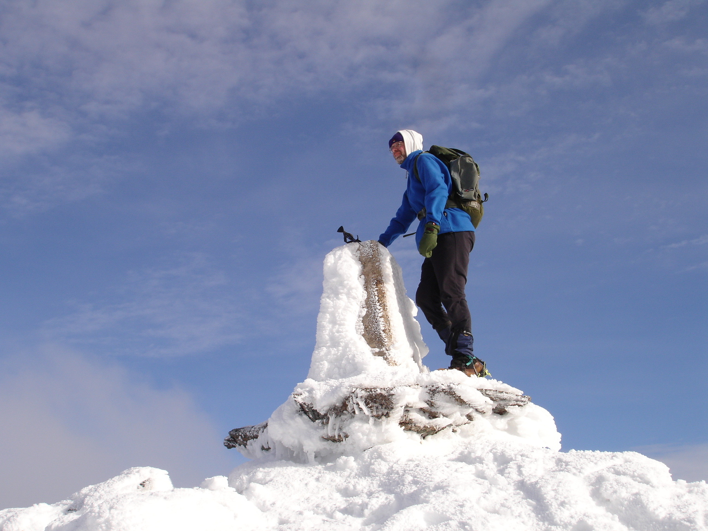
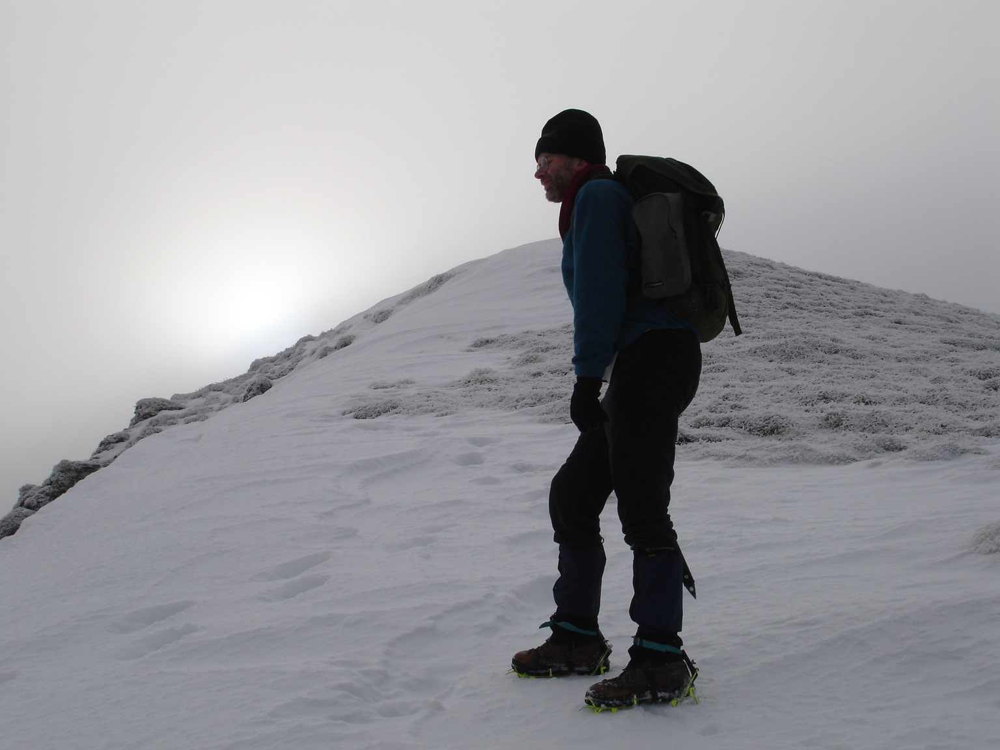

Glasgow
In the mid eighties, I was involved with an organisation called Frontier Youth Camps.
Camping was provided to kids from what, in less enlightened times, we called deprived backgrounds. Camping was either under canvas or in rudimentary roofed accommodation.
The organisation was technically a Christian one – although not evangelical. The ethos was more or less that the kids deserved a holiday – but didn’t need preached to.
I was also involved in a local Glasgow project that placed kids coming straight out of childrens’ homes in a supported living house.
It was the brainchild of Ian Milligan, a social worker friend and neighbour, who had recognised the need for this type of accommodation.
Ian approached a local businessman for money / premises and got both!
This project was needing a new live-in worker.
At a training event for Frontier Youth Camps I was talking to a guy called Graham Aitken about our need for a worker.
“I may know someone,” Graham said. Portentous words it transpired.
Graham was living in Aberdeen and said he would send this chap down for an interview. (It wasn’t really an interview).
And thus, with giant steps, Dave Hewitt walked into my life.
He rather quickly latched onto the fact that I was a hillwalker of sorts and had a car. In a manner to which I would become accustomed he set about taking over aspects of my life.
Mainly hillwalking – but also social aspects.
He would turn up at the door a few times a week demanding tea, the Guardian and banter about the week’s events. Often he would have with him a couple of samosas, purchased in one of his many favourite Asian carry out shops.
The housing project gave him a roof and a meagre stipend. I was always amazed at how little he could live on. Give him some sardines and a few custard creams…..

".....give him some sardines and a few custard creams..."
The housing project duties allowed Dave to go hitching midweek – he wrote a pean to hitching in the first issue of the Angry Corrie.
At weekends he would browbeat me into Munro bagging.
The supported housing project had rooms for two young people. Two I remember were a Celtic casual and a guy who ran off to the circus. Dave would comment to the Celtic casual on a new jumper.
“Eighty”, the guy would reply. The more expensive the better. There was obviously a big disconnect here as Dave was not really known as Beau Brummel.
After his stint at the project, he was gainfully employed at Stopover - a hostel for young homeless people. This possibly finally satisifed his mother’s desire that he have a “proper job”.
The social workers there had no idea about IT and Dave decided it would be a good thing if I created and maintained a database of the residents, to manage their interface with the benefit system etc.
It would never get past GDPR regulations these days.
But I would visit one night a week to develop it and met various residents and staff. It was a very admirable institution.
There was a resident in Stopover I shall never forget. He was – I think – what would be described as non-binary these days. He regularly wore a wedding dress. He frequented the gay clubs in Glasgow – particularly Club-X.
Dave had a particular rapport with him which was lovely to watch. The resident was profoundly deaf and did most of his communication by handwriting.
I recall a one liner that Dave and I would laugh about to this day. Stopover had a trainee social worker who was Greek. He was called Panos. The aforementioned resident once wrote to Dave – “Panos is Egypt.”
Dave would occasionally take staff or residents hillwalking. I recall an ascent of Ben Lomond where one young girl had an insult for every single person she met on the ascent. Some of them would “growl” back at her, as she described it.
Hillwalking

Looks like a post-work evening outing from the shadows

i think this is either stob a choire mheadhoin or stob coire easain
Dave Hewitt and I did much hillwalking together as a twosome. A lot of it was Munro bagging – although I never aspired to completion. He was forever inventing connections between hills and routes down that were not the same as the routes up. One would have to admit this last habit wasn’t always endearing when there was a perfectly good path and we were elsewhere on scree or heather. He was always fast – big long legs and years worth of fitness in his legs. I was fit too, in those days - running, hockey, cycling , badminton – but he was always faster. This was further exemplified in snow, because he weighed about the same as me – but had far larger feet by about 4 sizes. So he would float along the neve and I would plunge in.

".....give him some sardines and a few custard creams..."
Once when we were doing a couple of Munros via the West Highland railway line that involved chasing a train at the end – he insisted that we visit some obscure bothy off on a side path. I still recall the sprint back – him always ahead as we chased that last train. Where I was able to take a rare lead was when it came to scrambling. The big man was not well disposed to it – partly because his long legs and arms pushed his centre of gravity out from the rock. But I am six feet two – so it wasn’t only that. He was a bit fearty. On the Aonach Egach, at a particularly tricky pinnacle, I took Dave’s rucksack as well as my own to aid him in his teetering progress. On Sgurr Alasdair- in wet snow, he ended up taking the hands of both me and Linda – a person of barely five feet. This feartiness culminated in two rebuffs by the Inaccessible Pinnacle. I was pleased to be with him when he finally mocked that usurper.

The Angry Corrie
front cover of issue 1
murdo munro comic strip that ran in each issue
He loved football fanzines. I recall him enthusing about When Saturday Comes. At some point it dawned on him (with no prior market research or – perish the thought – branding) that there was a need for a hillwalking fanzine.
NB – not Munro Bagging – although that would get covered. The main idea was to be irreverent.
Initially it was laid out on an Apple Macintosh (hangs head in shame) belonging to one of our mates. Eventually we both had PCs and it was laid out in something called Pagemaker. I guess we bought this.
We took a wee while to name the nascent organ. And it has often needed to be explained.
It derived from a sketch by the Scottish Comedian Bing Hitler. He was actually Craig Ferguson who went on to huge fame in that lawless country sandwiched between Canada and Mexico.
Bing Hitler was riffing on Scottish folk duo – the Corries. The duo were regulars on a Saturday night either before or after the football.
Bing characterised them as The Sad Corrie – Roy Williamson – who penned Flower of Scotland and sang in a Wild Mountain Thymey way – and The Angry Corrie – Ronnie Browne – who bashed a bodhrán and snarled about the English.
Bing Hitler invented his own Angry Corrie song about the Vikings
They shaved the beards off our women
With razors made of bronze
They stole all the good LPs
And ate all the tattie scones.
Hence the name.
It had to be distributed, obviously – and at first we just visited all the outdoor shops begging them to sell it. Some friendly links were forged – and there was an Angry Corrie discount to be had at some. Outdoor hostelries were another outlet – the Clachaig and The Green Welly Shop. An outlier was the Drovers‘ Inn – which one might have thought would be a dead cert – but nothing doing.
It remains a mystery to me how we accumulated the praetorian guard who are assembled on this memorial edition. It was definitely a function of Dave’s willingness to correspond (and in the early days this was snail mail) with everyone who ever made contact.
Various friends were inveigled into the Corrie’s backroom staff. Chris Tyler, the Swan (aka Craig Smillie), Julia Anderson, Tessa Carroll – and there is an unseen cloud of witnesses who pop up all the time on social media lamenting the Corrie’s passing.
Numbers
I don't think he ever got to 4108
he loved sir don bramna's average of 99.94

a trig point that would have been # 415
Dave was obsessed with numbers. Cricket scores, all his hill summits – right down to the ones sensible people didn’t count. Glasgow City Council taxi licence numbers were bagged in ascending order. Trig points also bagged in ascending order of height. That one didn’t go the full distance but I do recall him persuading various chums to chip in on a boat hire to bag Lady Isle off Troon - 6m. I boasted how I had done one near Machrihanish golf course – 11m. He did a calendar round of Munros – a Munro bagged on each day of the year. He could rattle of all the high cricket innings – Brian Lara 501, Don Bradman 452 etc (Ed - get the subs to check these).
Bagging

wearing ski goggles for no apparent reason.
this is beinn buidhe

knocking off the sky munros - sgurr nan gillean

my usual view - summer or winter - his back
He was always knocking off Munros but, because he was twice rebuffed by the Inaccesible Pinnacle, he downplayed the ultimate aim of completion. At time of writing we need access to a Toshiba laptop that is about 8 cm thick that Tessa thinks contains what I christened “the battered old ledger”. This would tally up all the other summits. One might have to undertake a refresher in Windows 95. (Actually I’ll probably just remove the hard disk.) He was always rabbiting on about a battered piece of paper that he had lost that enumerated some list of subsidiary summits. Goodness knows how subsidiary they were not to be logged on the computer. He was going to have a party if he ever found said scrap. I recall a winter round of the three Munros of Beinn a' Ghlò when we walked out in the dark for about at least an hour – in plastic boots – because “you need the third one Warbeck”. He and I had done the first two previously – and I had shown zero desire in the meantime to knock off the third. As I drove home from Stirling, at about 2100 I was probably muttering under my breath.
I thnik this is an stuc
come on warbeck - only three to go
feeding a friendly dog
Likewise – I would never have done the seven Munros at Ben Lawers (the three pics above) in a oner if it wasn’t for you know who. On the summit of the last one – he asked of me and Ken Stewart – “now – how shall we go down?” “The easiest way” I demanded. And of course there was Ben Cleuch. He was on 1750 or so – and one of his numerical ideas was to “do his age”. i.e – get up it in fewer minutes than his years. I am not sure if that happened. The factors that went into a fast ascent were myriad – and all were considered.
Eccentricity
He would attend rock gigs in full hillwalking clothing. All his life he refused to own a camera – he thought it went against existentialism (or something). Paradoxically – he liked looking at photos – including ones I had taken of him. He once heard that Jack Russell (not his real name) would urinate on a new pair of leather wicket keeping gloves because in some weird way it cured the leather. Seeing Russell as an eminent source of expertise – Dave used to follow suit with each new pair of leather boots. I was sufficiently amused and appalled at this habit that I used it in at least two Murdo Munro cartoons.
murdo goes dating in TAC6
The Watershed
cover illustration
credit:chris tyler
who knew it would go so far west ?
In 2005 a man called Peter Wright claimed to be the first person to have walked the Scottish Watershed. The line that separates flow into the North Sea versus the Atlantic. This was a disingenuous claim. Dave Hewitt had mapped, delineated and walked the Scottish Watershed in 1987. And it is very unlikely (probably provably so) that Peter Wright did not know this. Peter Wright was a good self-publicist and brought out a coffee table book - appearing on television and in other outlets. Dave would only mutter about him – but I was incensed.
minibus party on ben lomond
camping at shielbridge
back to the grind after a support visit
I created a Wikipedia page for the Watershed and one for Dave. I joined Wright’s Facebook group in order to castigate him. His defence was always that Dave had chosen the wrong end-point. I am not enough of a pedant to care about Wright’s justification for Dunnet Head versus Cape Wrath. I hold this truth to be self-evident – that difference doesn’t matter a damn. Furthermore – other people had walked the Watershed in the interval between Dave and Wright. Lastly – Dave did it in a oner. Wright did it in a dilettantish weekend outing manner. Doubtless dining on quail’s eggs and lampreys.
Watershed Links
Sport
He was interested In many sports, although he barely played any. In my decades, only table tennis and running.
half marathon somewhere.
But he took an avid interest in cricket, football, athletics – including endurance / fell running, rugby (a bit- he would accompany Robin Howie to Murrayfield).
He was an amazing table tennis player. He barely moved his feet. He never played a backhand. He just stood their using his massive reach to play everything as a forehand. Loaded with top spin.
Culture
He was widely read. I have never read any Anthony Burgess and probably never shall. Dave used to quote the first line of Earthly Powers off by heart - "It was the afternoon of my eighty-first birthday, and I was in bed with my catamite when Ali announced that the Archbishop had come to see me." James Joyce was another. He would use Joyce’s concatenation of words in his own writing. He made up concatenations like legstretch for example. This was his morning walk. He was a big Dylan fan. I think his favourite lines were “a change in the weather is known to be extreme but what’s the use of changing horses in midstream”. Or it might just be that we were always discussing the weather. He loved the film The Unbearable Lightness Of Being. In his love of words, he would occasionally refer to any of our friends who were anxious as experiencing The Unbearable Heaviness Of Being. He loved Glasgow working class culture and voraciously collected figures of speech and aphorisms. One of his favourites was ”I was like that”. It is very difficult to explain to non-Glaswegians how to use that phrase. Hand gestures may be needed. Another was “hingmy”. Hingmy being a substitute for thingmy – as in ‘a thing’. He loved it when someone – referring to the film Jaws 2 – called it Jaws Hingmy. He had many encounters with the working class youth of Glasgow when he lived in a high flat in the Gorbals. Unfortunately the one that still makes us laugh out loud does not bear repetition.
half marathon somewhere.